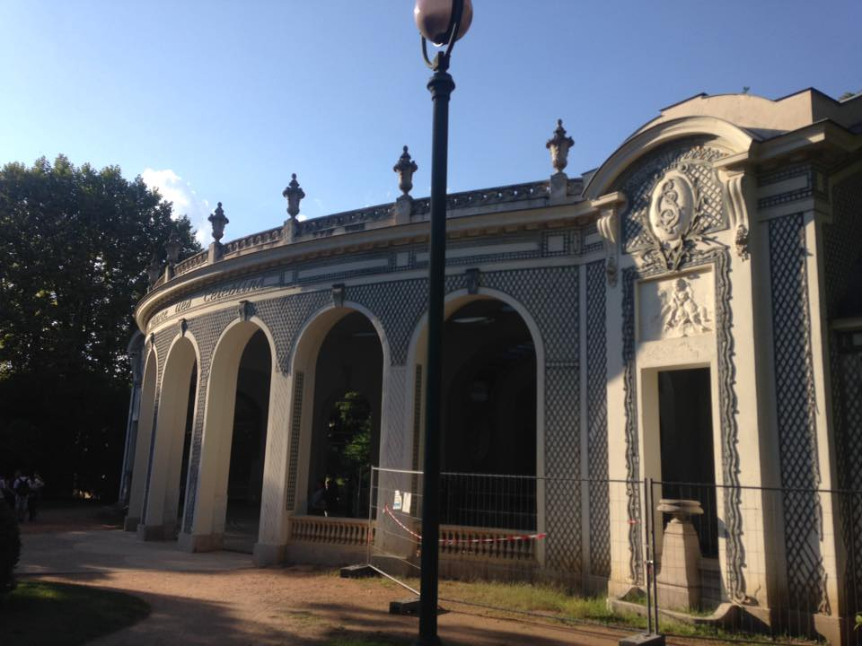

The Park
A landscaped spa promenade rather than a conventional ornamental park, designed as part of the social and therapeutic life of the town.
Vichy surprised us. Our France story remembers a peaceful city of grand Belle Époque buildings, parks, mineral-water heritage and riverside walks — but it is also a place carrying one of the most politically loaded names in twentieth-century French history. Both stories belong here, and neither needs to erase the other.
Our main France page records Vichy as one of those places that offered us a completely different pace from the country's bigger cities. We remember the grand Belle Époque architecture, elegant parks, famous mineral waters and a calm atmosphere that suited a slower day of walking and looking around.
That spa identity is not a modern invention. Vichy grew around its natural mineral springs and became one of Europe's major thermal resorts. In 2021, it was inscribed as one of the eleven Great Spa Towns of Europe on UNESCO's World Heritage List — a transnational group of historic spa towns that developed around mineral-water culture from the eighteenth century into the twentieth.
For us, Vichy worked because it did not feel like a frantic sightseeing stop. Parks, promenades and the river gave the city a sense of space that made it easy to simply wander.
Thermal buildings, drinking halls, covered galleries and gardens are not decorative extras here — they are part of the urban identity that developed around Vichy's mineral springs.
The Parc des Sources is one of the places that best explains how Vichy works. Its origins stretch back to the early nineteenth century, and over time it became a central promenade linking the thermal district, covered galleries and leisure buildings. The city completed a major restoration of the park in 2026.
A landscaped spa promenade rather than a conventional ornamental park, designed as part of the social and therapeutic life of the town.
Vichy's mineral waters shaped the city's development and gave rise to the thermal buildings and drinking-hall culture associated with European spa towns.
Covered galleries, spa buildings, casinos, hotels and villas all form part of the wider urban landscape recognised in the Great Spa Towns of Europe.
Any honest guide to Vichy has to acknowledge the Second World War. After France's defeat in 1940, the city became the seat of the authoritarian French State led by Marshal Philippe Pétain. The shorthand “Vichy France” comes from that period, not from the older identity of the town itself.
That political history is heavy and important, but it is also only one chapter in a much longer story. Vichy had been a major thermal resort for generations before 1940 and continued as a spa town afterwards. We think the city makes more sense when you understand both realities rather than reducing it entirely to either one.
Worth keeping separate: “Vichy” can mean the city, the wartime government headquartered there, or the wider political regime. They are related, but they are not interchangeable.
One of the things we liked was how easy it felt to slow down. The Allier gives Vichy a broad riverside setting, while the parks and promenades make the town naturally walkable in a way that fits its spa heritage.
Give yourself time to move between the thermal quarter, historic centre, parks and river rather than treating Vichy as a single attraction.
The appeal is as much in the streetscape and architectural detail as in headline sights. Vichy rewards paying attention to its grand old façades.
This is one of the France stops where a less ambitious itinerary makes sense. The city feels more coherent when you let it unfold at spa-town pace.
Some of our own photos from Vichy — leafy parks, elegant spa-town architecture and the grand buildings that give the city its distinctive Belle Époque character.



Use the widget below to browse current activities in and around Vichy and the wider Auvergne. These are planning options rather than a claim that we personally took the exact experiences shown.
Disclosure: Some links on this page are affiliate links. If you book through them, we may earn a small commission at no extra cost to you.
None of the current Drive From Home French cities you've supplied is a genuinely clean Vichy match, so we've deliberately left the integration off rather than attaching Lyon or Clermont-Ferrand and pretending it's the same destination.
Common questions
Next in our France collection is Clermont-Ferrand — a completely different side of the Auvergne, dominated by black volcanic stone and the Chaîne des Puys.